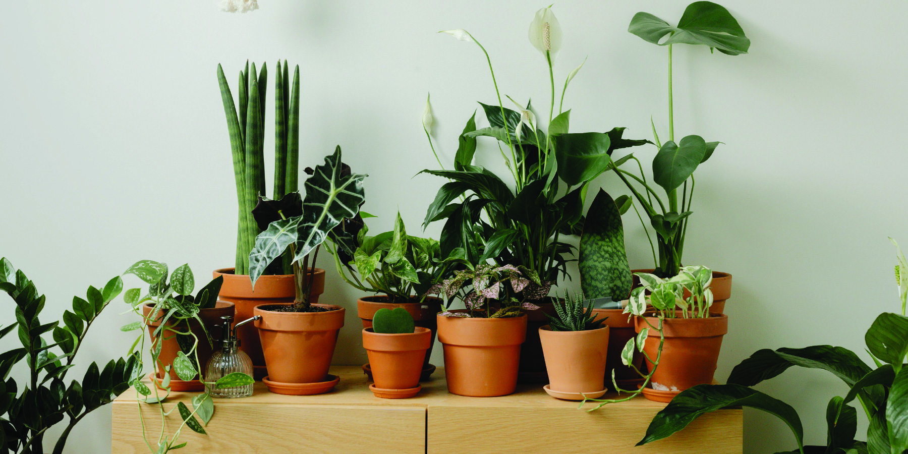
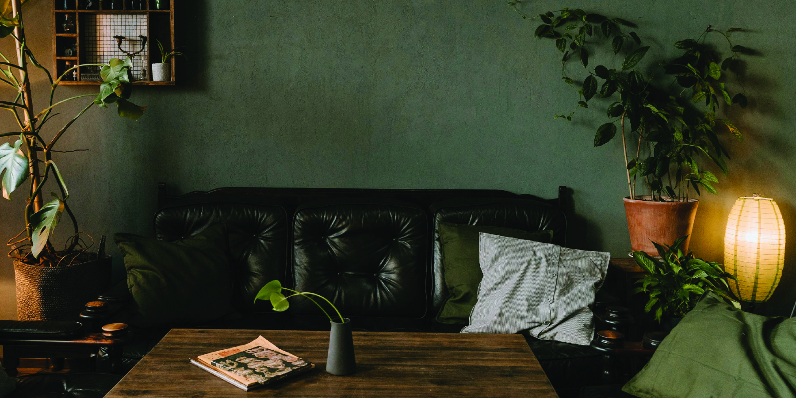
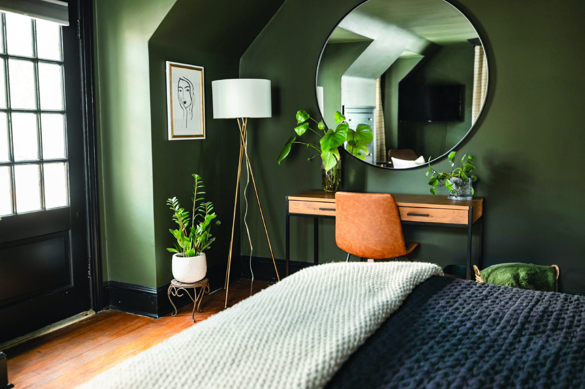
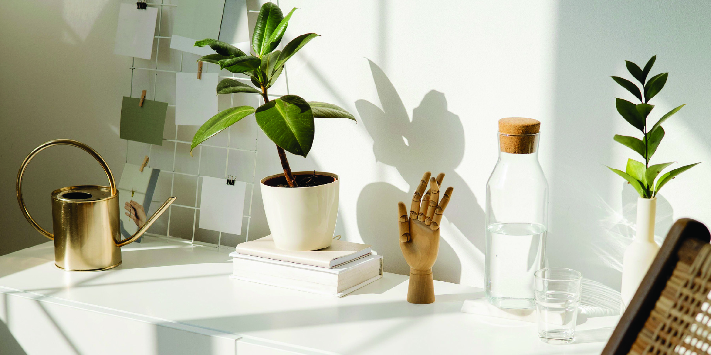
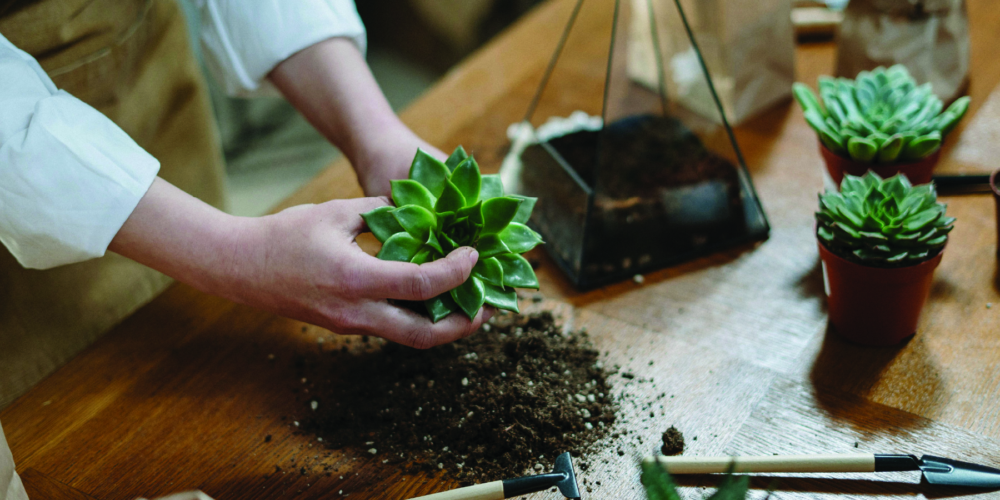

Benefits
Cleaner Air, Naturally
Plants act as natural air filters, absorbing toxins and releasing fresh oxygen. Popular choices like spider plants, pothos, and peace lilies can help reduce pollutants like formaldehyde and benzene, making your space healthier and more breathable.
Boosted Mood & Reduced Stress
Just being around plants has been shown to reduce anxiety and promote a sense of calm. Whether it's a leafy monstera or a small succulent, your leafy companions can boost your mood, lower stress, and even help you feel more focused and relaxed.
Better Productivity & Creativity
Houseplants aren't just for decoration—they can actually improve concentration, memory, and productivity. Studies have shown that plants in workspaces and study areas can increase efficiency and creativity. A little green can go a long way!
A Touch of Nature Indoors
Bringing greenery into your home adds warmth and life to any room. Plants can soften hard edges, fill empty corners, and create a calming environment—perfect for making your space feel more like home.
Mindful, Rewarding Care
Taking care of houseplants encourages routine, mindfulness, and patience. Watching something grow through your own care can be incredibly grounding and satisfying, even for busy lifestyles.